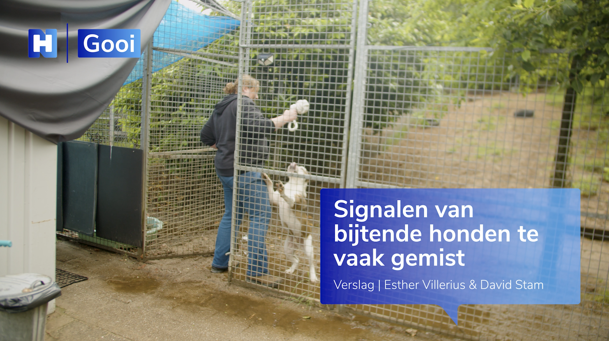
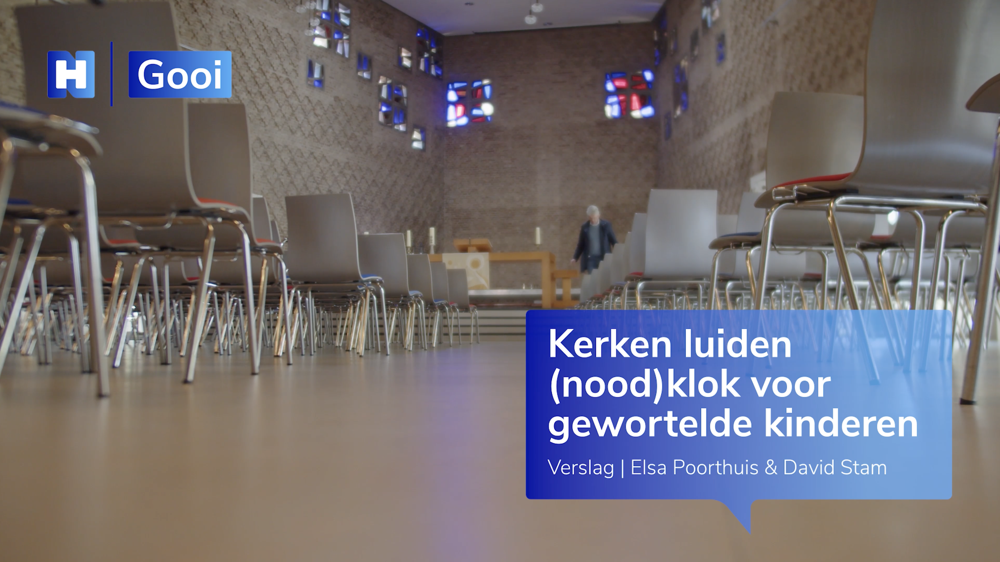
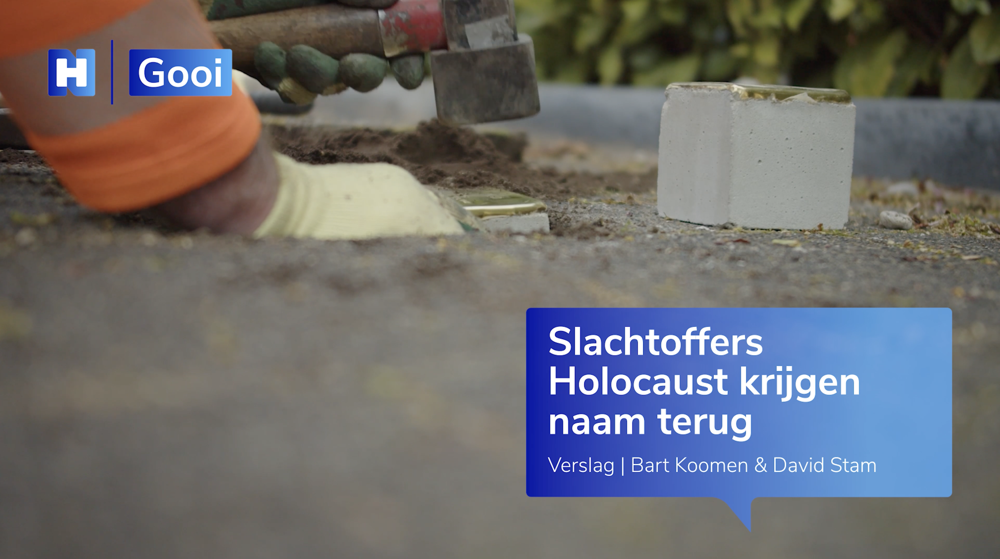
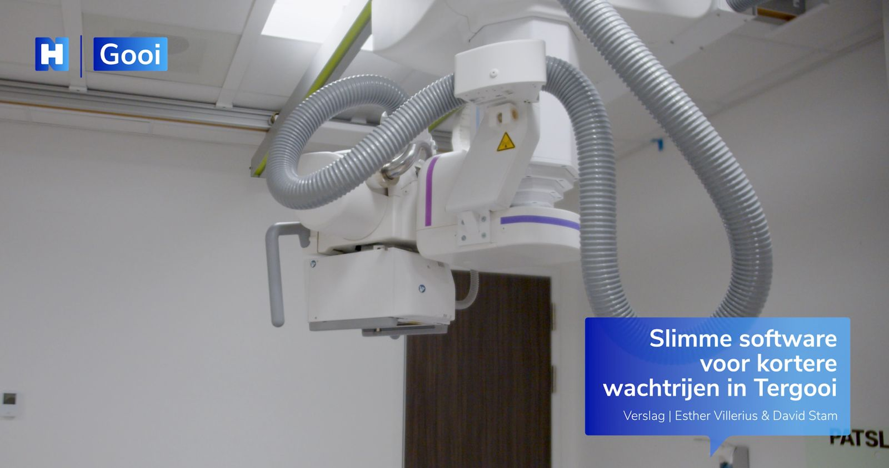

DavidAtWork
Videomaker & Visual Storyteller

David Benjamin
Stam.
Videomaker met een passie voor beeld, sfeer en verhaal. Van bedrijfsvideo’s en promotievideo’s tot evenementen, openingen en bruiloften: "Ik help om momenten, mensen en bedrijven op een sterke en oprechte manier in beeld te brengen."
Creatief, betrokken en helder in communicatie.

Mijn liefde voor video en film begon al vroeg. Als kind wilde ik al regisseur worden, en die passie is later de basis geworden van mijn werk. Daarom ben ik begonnen met een mbo-opleiding in Media- en AV-technologie, waarna ik sinds 2023 ook Journalistiek aan de Hogeschool Utrecht ben gaan studeren.
Door die combinatie van opleidingen heb ik niet alleen oog ontwikkeld voor beeld en techniek, maar ook voor verhaal, inhoud en sfeer. Ik vind het mooi om losse elementen samen te brengen tot één geheel dat klopt.
In de praktijk heb ik ervaring opgedaan bij verschillende bedrijven. Ik liep stage bij Videonieuwsbericht in Hilversum en later bij Talpa Studios, waar ik nog steeds als freelancer actief ben. Daarnaast heb ik tijdens mijn opleiding journalistiek extra story-telling ervaring opgedaan. Met die ervaring wil ik nu steeds meer mijn eigen weg volgen onder mijn eigen naam: DavidAtWork.
Als persoon ben ik vriendelijk, creatief en sociaal. Ik houd van laagdrempelig contact, denk graag mee en werk op een manier die duidelijk en prettig is voor de mensen met wie ik samenwerk.
Wat ik voor je kan betekenen?
Bedrijfsvideo’s
Video’s die laten zien wie jullie zijn, wat jullie doen en waar jullie voor staan.
Promotievideo’s
Video’s om een bedrijf, merk, opening, product of dienst op een aantrekkelijke manier onder de aandacht te brengen.
Evenementen
Registraties van bijvoorbeeld boekpresentaties, openingen, samenkomsten en andere bijzondere momenten.
Bruiloften
Sfeervolle videobeelden van een belangrijke dag, met aandacht voor emotie, details en beleving.
Mijn aanpak
Ik werk het liefst met echte beelden en echte momenten. Mijn focus ligt op filmen, meedenken en monteren tot een sterk geheel. Ik ben geen grafisch ontwerper, dus mijn werk richt zich niet op video’s met veel gemaakte animaties of zwaar ontworpen beeldlagen. De kracht zit juist in echt beeld, een goede sfeer en een verhaal dat natuurlijk overkomt.
Ik denk actief mee over wat het beste past bij de opdracht. Daarbij vind ik het belangrijk dat er duidelijk gecommuniceerd wordt, zodat vooraf helder is wat er gemaakt wordt en wat je kunt verwachten.
DavidAtWork
- Professioneel, maar toegankelijk
- Vriendelijk en makkelijk in contact
- Creatief en betrokken
- Denkt goed mee over het eindresultaat
- Duidelijk in communicatie
- Flexibel inzetbaar
Ik ben daarnaast goed mobiel en flexibel in waar ik werk. Door mijn auto en studenten-OV ben ik breed inzetbaar voor verschillende opdrachten en locaties.
Wat anderen over mij zeggen.
Door het goed vooruit denken van David, en doordat hij zelfstandig veel werkzaamheden oppakt, wordt het ons erg gemakkelijk gemaakt om dit project samen te doen. Tegelijkertijd staat David open voor nieuwe suggesties en ideeën, zonder zijn eigen plan uit het oog te verliezen.
David heeft een achttal dagen vol meegedraaid op de redactie. Je ziet meteen waar zijn passie en talent ligt: reportages filmen en monteren. Op de redactie was David zeer benaderbaar, prettig in de omgang en journalistiek professioneel aanwezig.
Een greep uit mijn werk.
Shorts
Loetje
Promovideo restaurantopening
Opel
Promovideo automotive
Obliq
Bedrijfsvideo
Drone opname
Luchtopname locatie
Ontworteld
Documentaire short
Summit Teaser
Teaser evenement
Journalistieke storytelling

Hondenasiel
Documentaire over dierenopvang

Klokkenluiders
Journalistiek portret van klokkenluiders

Struikelstenen
Documentaire over Stolpersteine in Utrecht

Röntgen
Bedrijfsvideo
Duidelijk tarief,
geen verrassingen.
De uiteindelijke prijs hangt af van de opdracht, de duur van de opnames, de montage en het eventuele gebruik van extra apparatuur (bijv. drone, actioncam, zenderset). Eventuele extra kosten door apparatuur bespreek ik altijd vooraf duidelijk, zodat je precies weet waar je aan toe bent.
Klaar om jouw verhaal vast te leggen?
Neem gerust contact op om de mogelijkheden te bespreken. Ik denk graag met u mee.